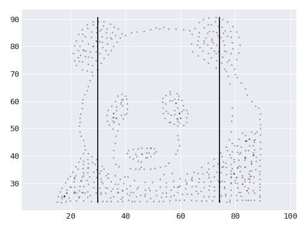

WideLines#
- class data_morph.shapes.lines.wide_lines.WideLines(dataset: Dataset)[source]#
Bases:
LineCollectionClass for the wide lines shape.

This shape is generated using the panda dataset.#
- Parameters:
dataset (Dataset) – The starting dataset to morph into other shapes.
- distance(x: Number, y: Number) float#
Calculate the minimum distance from the lines of this shape to a point (x, y).
- Parameters:
x (numbers.Number) – Coordinates of a point in 2D space.
y (numbers.Number) – Coordinates of a point in 2D space.
- Returns:
The minimum distance from the lines of this shape to the point (x, y).
- Return type:
Notes
Implementation based on this Stack Overflow answer.
- lines#
An iterable of two (x, y) pairs representing the endpoints of a line.
- Type:
Iterable[Iterable[numbers.Number]]
- name: str | None = 'wide_lines'#
The display name for the shape, if the lowercased class name is not desired.
- plot(ax: Axes | None = None) Axes#
Plot the shape.
- Parameters:
ax (matplotlib.axes.Axes, optional) – An optional
Axesobject to plot on.- Returns:
The
Axesobject containing the plot.- Return type:
{kind=link}